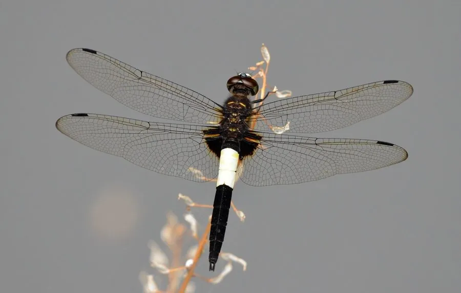

昆虫 · 动物界
玉带蜻 Pseudothemis zonata

腹部有两条白色宽带的蜻蜓，雄虫腹部黑白分明，常在水面上空快速飞行，中国和东亚的池塘水田常见。
- 分类
- 门节肢动物门纲昆虫纲目蜻蜓目科蜻科属玉带蜻属
- 栖息环境
- 池塘、水田、湖泊与缓流边缘，常在水面上空飞行
- 地理分布
- 中国大部分地区、日本和朝鲜半岛
- 保护级别
- 暂无评估；湿地指示物种
物种志
玉带蜻成虫体长约 4–4.5 cm，翅展约 8 cm，雄虫腹部黑色，第三节和第四节有白色宽带，黑白分明，像系着一条玉带，因此得名；雌虫腹部黑色，白色带较窄或呈黄色。翅透明，翅基有黑褐色斑。
它生活在池塘、水田、湖泊和缓流边缘，成虫飞行快速，常在水面上空来回巡逻，捕食蚊蝇、小型蛾类等飞虫，雄虫有较强的领域性，会驱赶入侵的其他蜻蜓。雌虫点水产卵，幼虫生活在水中，捕食水生昆虫和小鱼。玉带蜻分布于中国大部分地区、日本和朝鲜半岛，是东亚常见的蜻蜓之一，可作为湿地环境质量的指示物种。
形态与习性
- 食性捕食蚊蝇、小型蛾类等飞虫
- 体长约 4–4.5 cm，翅展约 8 cm
- 识别雄虫腹部有两条白色宽带，黑白分明
- 习性飞行快速，雄虫有领域性
- 分布中国大部分地区、日本和朝鲜半岛
趣味知识
- 玉带蜻雄虫腹部黑白分明，像系着一条玉带。
- 它常在水面上空来回巡逻，捕食蚊蝇等飞虫。
- 玉带蜻的幼虫生活在水中，捕食水生昆虫和小鱼。